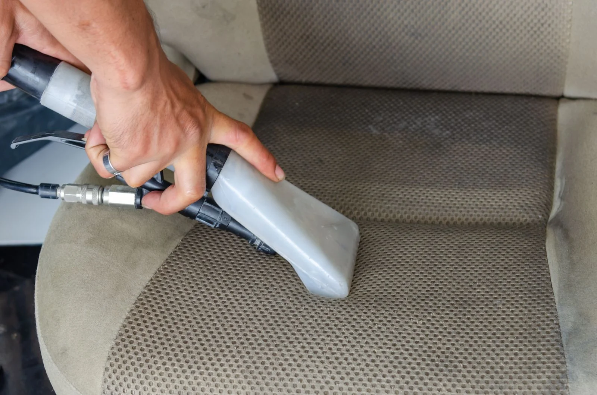

ArCar116 в Казани: ремонт вмятин без покраски, полировка, бронеплёнка и химчистка. Расскажите, что хотите исправить или защитить в автомобиле. По телефону или в Telegram можно обсудить задачу и согласовать визит на улицу Седова.
Ремонт вмятин без покраски — отдельное направление ArCar116. Возможность такого ремонта зависит от характера повреждения: сообщите, где расположена вмятина, есть ли заломы и повреждения краски. Окончательный способ уточняйте после оценки детали.
02
Полировка авто
Полировка помогает работать с внешним видом покрытия. Если беспокоят потускнение или мелкие следы на кузове, покажите проблемные участки. Глубину повреждений, допустимый объём обработки и ожидаемый результат нужно обсудить до начала работ.
03
Бронеплёнка
Защитную плёнку выбирают с учётом деталей и условий эксплуатации автомобиля. Уточните, какие зоны хотите закрыть: например, капот или отдельные уязвимые участки. Марку материала, подготовку поверхности и состав оклейки согласуйте с мастерской.
04
Химчистка
Химчистку салона удобно обсуждать по конкретным зонам: сиденьям, ковровому покрытию или обивке. Расскажите о материале и происхождении пятен. Возможность удаления загрязнений, объём обработки и время высыхания уточните перед визитом.

Иллюстрация · Уход за обивкой салона · Khunkorn Laowisit / Pexels · Источник
ARCAR116 · КАЗАНЬ
Начните с задачи вашего автомобиля
Небольшая вмятина, потеря блеска и загрязнения салона требуют разного подхода. Перед обращением определите, что беспокоит больше всего: внешний вид конкретной детали, состояние покрытия или обивки. ArCar116 предлагает четыре направления работ; подходящий вариант и его объём обсудите с мастерской. Изображения на странице показывают виды ухода за автомобилем и не являются фотографиями работ ArCar116.
С чем можно обратиться
Чтобы разговор был предметным, опишите видимый дефект и желаемый результат. Эти ориентиры помогут сформулировать запрос; конкретный способ работы определяют после знакомства с автомобилем.
На двери или крыле появилась вмятина — покажите её общий вид и состояние краски крупным планом.
Кузов потерял блеск — укажите детали, которые хотите отполировать, и заметные повреждения покрытия.
Планируете защитить кузов плёнкой — перечислите нужные зоны и расскажите, есть ли уже старое покрытие.
В салоне остались пятна — назовите материал обивки, давность загрязнения и средства, которыми уже пользовались.
Что обсудить для оценки стоимости
Объём работ зависит от площади и состояния поверхности. Для вмятины важны её глубина, расположение и состояние краски; для полировки — характер следов и количество деталей. При оклейке обсудите выбранные зоны и материал, при химчистке — состав салона и сложность загрязнений. Уточните, что входит в расчёт, какие дополнительные операции возможны и когда будет согласована итоговая стоимость.
Что подготовить перед обращением
Сообщите марку, модель и год автомобиля. Сделайте несколько фотографий при дневном свете: общий план детали и крупный план дефекта. Не закрывайте проблему фильтрами или бликами. Если деталь раньше ремонтировали, красили или оклеивали, расскажите об этом. До поездки согласуйте удобное время, необходимость осмотра и ориентир по длительности работ; фотографии помогают начать обсуждение, но не заменяют оценку состояния автомобиля.
Как обратиться в мастерскую
01
Расскажите о задаче
Позвоните или напишите в Telegram: назовите автомобиль, нужную услугу и приложите понятные фотографии проблемного участка.
02
Согласуйте детали
Уточните необходимость осмотра, состав работ, порядок расчёта стоимости и подходящее время визита в мастерскую.
03
Приезжайте по договорённости
Адрес: Казань, улица Седова, 24, корпус 1. Перед выездом подтвердите договорённость и при необходимости уточните подъезд.